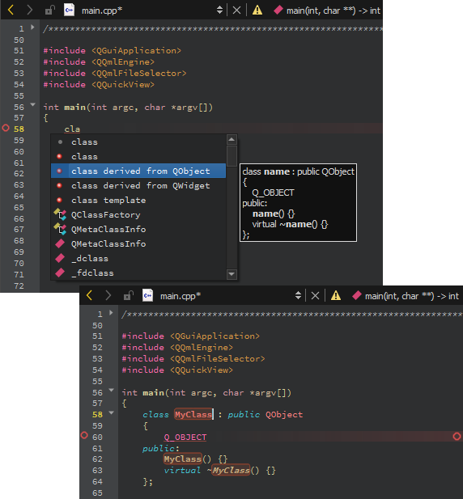

Complete code
As you write code, Qt Creator suggests properties, IDs, and code snippets to complete the code. It shows a list of suggestions to the statement currently under your cursor.
Press Tab or Enter to accept the selected suggestion and complete the code.
Suggestions for completing C++ code.
Suggestions for completing QML code.
To open the list of suggestions at any time, press Ctrl+Space. If only one option is available, Qt Creator inserts it automatically.
Summary of Available Types
The following table lists available types for code completion and icon used for each.
| Icon | Description |
|---|---|
 | A class |
 | An enum |
 | An enumerator (value of an enum) |
 | A function |
 | A private function |
| A protected function | |
 | A variable |
 | A private variable |
 | A protected variable |
| A signal | |
 | A slot |
| A private slot | |
 | A protected slot |
| A C++ keyword | |
| A C++ code snippet | |
 | A QML type |
 | A QML code snippet |
 | A macro |
| A namespace |
Complete code snippets
Code snippets can consist of multiple variables that you specify values for. Select an item in the list and press Tab or Enter to complete the code. Press Tab to move between the variables and specify values for them. When you specify a value for a variable, all instances of the variable within the snippet are renamed.

C++ code snippet.
QML code snippet.
See also Complete CMake code, Nim, Add code snippets to the auto-complete menu, Completion, and Snippets.